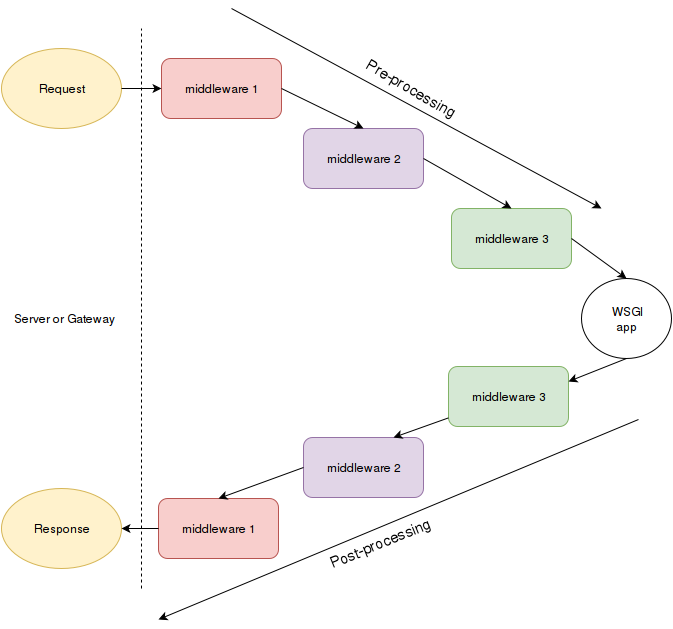

中间件 - Middleware
对于服务端来说中间件可以充当应用，响应服务器发来的请求；而对应用端来说中间件则充当了服务器的角色，与应用端进行交互。中间件就像餐厅里的服务员，把大餐(数据)从厨师(服务器)手中接过，传递给客户(应用端)，客户如果对饭菜不满意，会经由服务员反馈给大厨。

中间件这个概念在很多 web 框架中都存在，这与编程语言无关。nodejs 和 django 会更加显式的申明中间件，比如下面 nodejs 的中间件，每次应用端收到 request 都会打印出当前时间。
app.use((req, res, next) => {
console.log("Time:", Date.now());
next();
});
作为 WSGI 框架之一的 flask 则用了 extension/plugin 的概念，应用端 app 被 extension 包裹，以达到中间件的目的。
当然也可以直接用 flask 的 before_request, after_request 去达到同样效果。
"""
Example how flask uses middleware wrapping around the application
"""
from flask import Flask
from flask_login import LoginManager
app = Flask(__name__)
login_manager = LoginManager()
login_manager.init_app(app)
下面这一部分是 flask_login 里 init_app 的代码，作用是把 LoginManager 这个中间件挂载在 flask app 这个全局实例上，同时在每次 request 循环后触发一个_update_remember_cookie 的任务来更新 cookie，以保持登录状态。
def init_app(self, app, add_context_processor=True):
"""
Configures an application. This registers an `after_request` call, and
attaches this `LoginManager` to it as `app.login_manager`.
:param app: The :class:`flask.Flask` object to configure.
:type app: :class:`flask.Flask`
:param add_context_processor: Whether to add a context processor to
the app that adds a `current_user` variable to the template.
Defaults to ``True``.
:type add_context_processor: bool
"""
app.login_manager = self
app.after_request(self._update_remember_cookie)
if add_context_processor:
app.context_processor(_user_context_processor)
第一个 WSGI 中间件
我们来自己做一个 WSGI 中间件。
hello_world_app 是一个简单的 WSGI 应用，它会返回 Hello World 字符串，并添加相应的 headers，给客户端浏览器。
log_environ 是我们做的中间件，采用闭包和装饰器。内部的_inner 函数会打印出 WSGI 服务端(httpd)发来的 environ 环境变量, 最终把由 hello_world_app WSGI 应用端产生的结果返回给浏览器。
所以这个流程是先由浏览器发送 get 请求给 WSGI 服务器，服务器会整理请求的环境变量并把 environ 和 start_response 对象打包发给 WSGI 中间件，这个 log_environ 中间件会先把 environ 打印出来，然后调用 WSGI 客户端 hello_world_app，并把客户端的结果 Hello World 返回给服务器，再由服务器传回浏览器，最终结果在浏览器上呈现。
可以看的出 log_environ 就是装饰器，目的是加强 WSGI 应用端原有的功能，所以在 hello_world_app 上采用装饰器语法 @log_environ 也是能正常工作的。
写法一
from wsgiref.simple_server import make_server
def hello_world_app(environ, start_response):
status = '200 OK' # HTTP Status
# HTTP Headers
headers = [('Content-type', 'text/plain; charset=utf-8')]
start_response(status, headers)
# The returned object is going to be printed
return [b"Hello World"]
def log_environ(handler):
"""print the envrionment dictionary to the console"""
from pprint import pprint
def _inner(environ, start_function):
pprint(environ)
return handler(environ, start_function)
return _inner
# this will show "Hello World!" in your browser,
# and the environment in the console
app = log_environ(hello_world_app)
httpd = make_server('', 8000, app)
print("Serving on port 8000...")
# Serve until process is killed
httpd.serve_forever()
写法 2
from wsgiref.simple_server import make_server
def log_environ(handler):
"""print the envrionment dictionary to the console"""
from pprint import pprint
def _inner(environ, start_function):
pprint(environ)
return handler(environ, start_function)
return _inner
@log_environ
def hello_world_app(environ, start_response):
status = '200 OK' # HTTP Status
# HTTP Headers
headers = [('Content-type', 'text/plain; charset=utf-8')]
start_response(status, headers)
# The returned object is going to be printed
return [b"Hello World"]
httpd = make_server('', 8001, hello_world_app)
print("Serving on port 8001...")
# Serve until process is killed
httpd.serve_forever()